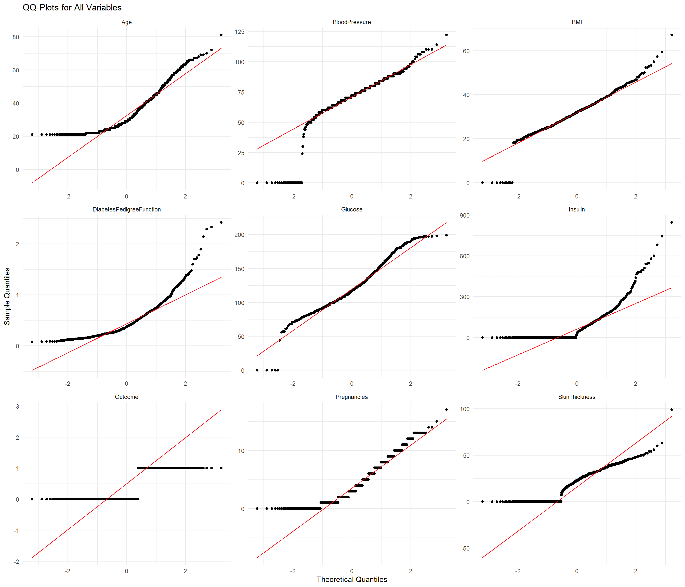
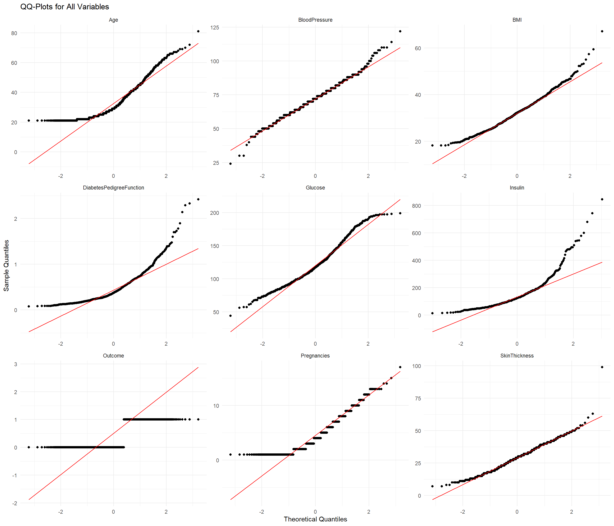
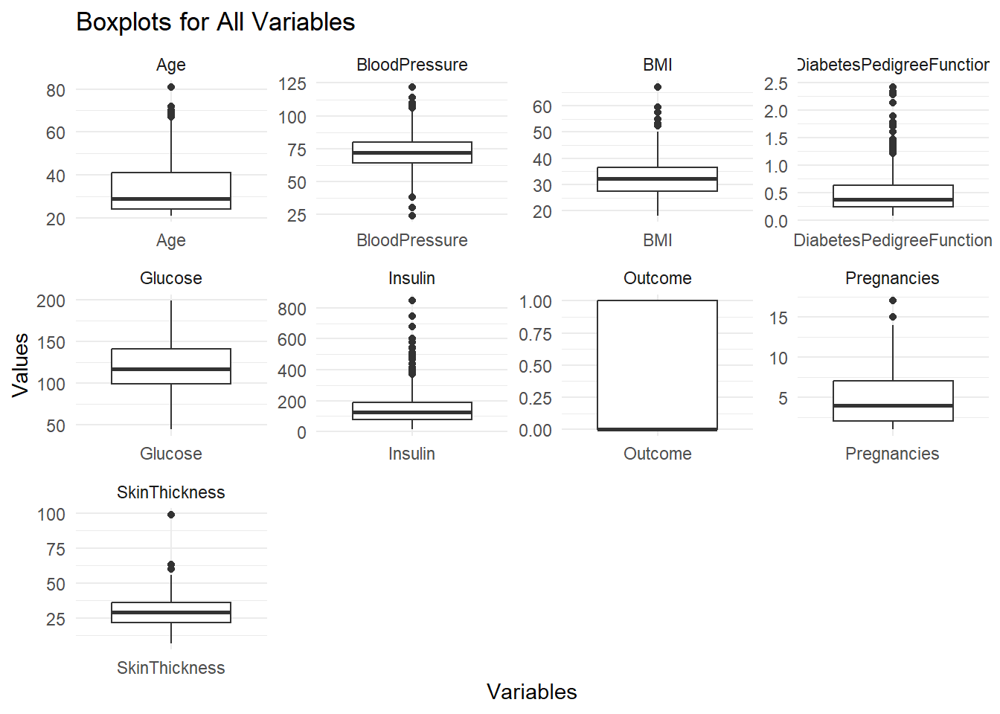
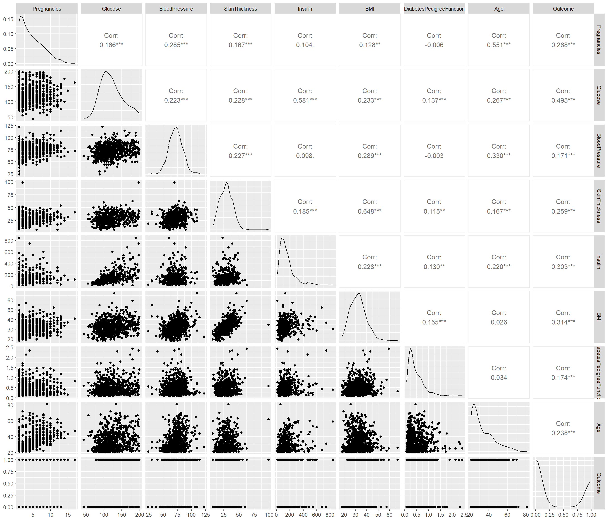
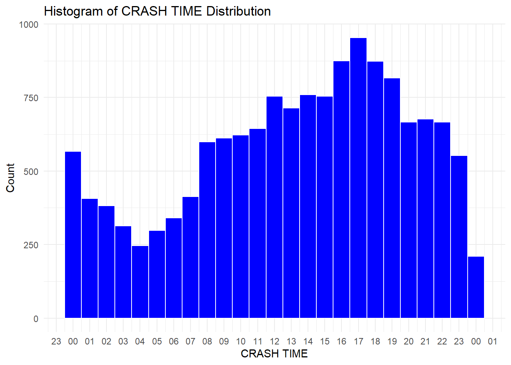
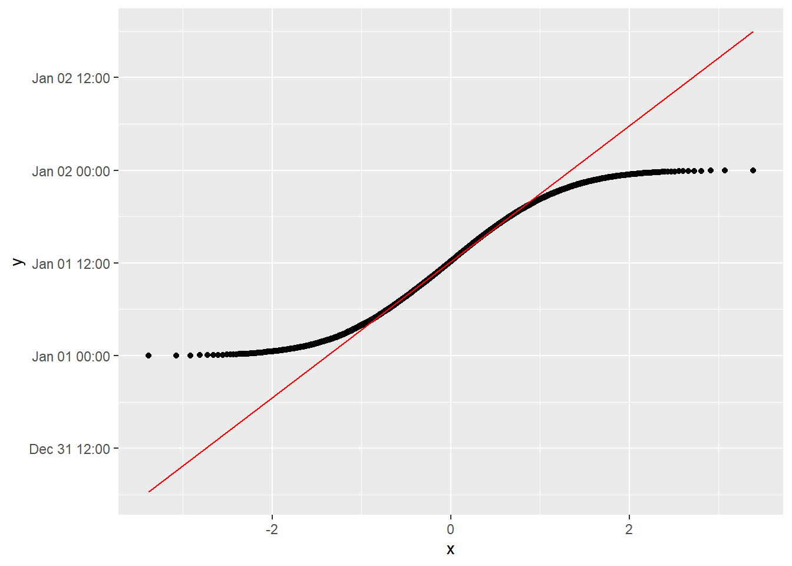
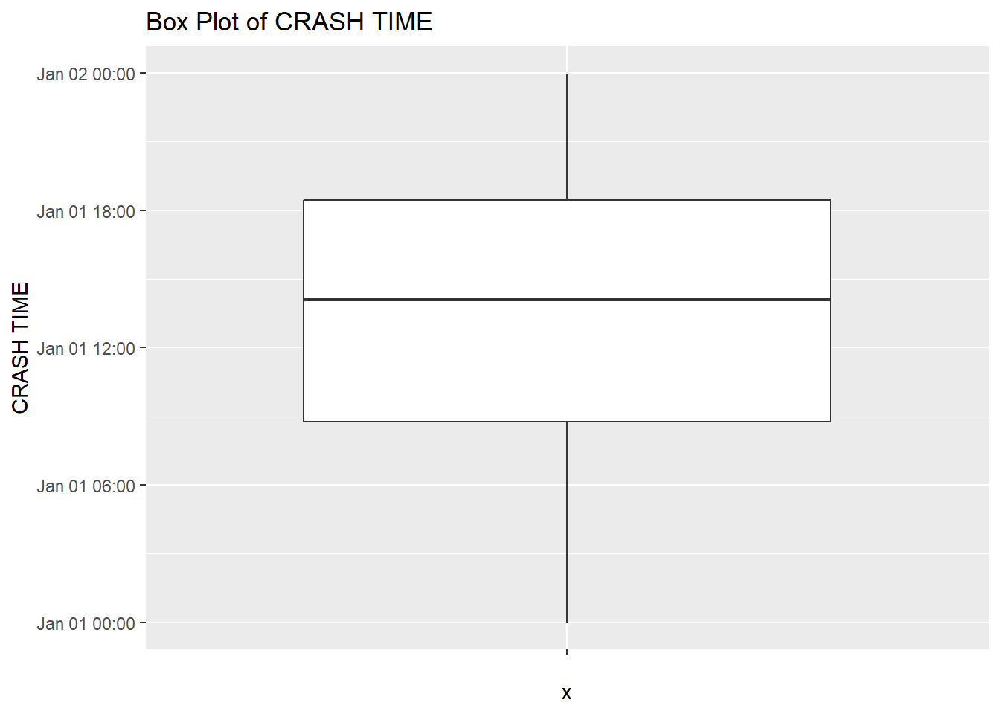

library(readr)
library(tidyverse)
library(skimr)
library(GGally)
library(gridExtra)
library(lubridate)Lab3: Exploratory Data Analysis
Overview
This is a two part lab where each part will focus on a different dataset: the first part will use a dataset containing a series of diagnostic measurements taken on members of the Akimel O’odham people (an indigenous group living in the Southwestern United States who are also called the Pima) to understand diabetes risk (click here to download diabetes.csv), and the second dataset contains information on traffic accidents in New York City in the months of July and August of this year, and was compiled by NYC Open Data (click here to download crashes.csv).
For this problem set you will need to install the skimr and GGally packages, and in particular the functions skim and ggpairs.
We will also explore the concept of an inlier, which is an erroneous value that occurs in the interior of the distribution of a variable, rather than in the tails of the variable. The US Census published an article on the problem of inliers here
Part 1: Health Diagnostics and Diabetes Incidence
Problem 1: Data Description and Outliers.
Load diabetes.csv into R and take a look at the data using the skimr package (make sure to install it if you don’t have it). Skimr provides a tidy summary function called skim. Use skim on the data frame that you loaded from diabetes.csv.
diabetesdf<- read_csv("diabetes.csv")skim(diabetesdf)| Name | diabetesdf |
| Number of rows | 768 |
| Number of columns | 9 |
| _______________________ | |
| Column type frequency: | |
| numeric | 9 |
| ________________________ | |
| Group variables | None |
Variable type: numeric
| skim_variable | n_missing | complete_rate | mean | sd | p0 | p25 | p50 | p75 | p100 | hist |
|---|---|---|---|---|---|---|---|---|---|---|
| Pregnancies | 0 | 1 | 3.85 | 3.37 | 0.00 | 1.00 | 3.00 | 6.00 | 17.00 | ▇▃▂▁▁ |
| Glucose | 0 | 1 | 120.89 | 31.97 | 0.00 | 99.00 | 117.00 | 140.25 | 199.00 | ▁▁▇▆▂ |
| BloodPressure | 0 | 1 | 69.11 | 19.36 | 0.00 | 62.00 | 72.00 | 80.00 | 122.00 | ▁▁▇▇▁ |
| SkinThickness | 0 | 1 | 20.54 | 15.95 | 0.00 | 0.00 | 23.00 | 32.00 | 99.00 | ▇▇▂▁▁ |
| Insulin | 0 | 1 | 79.80 | 115.24 | 0.00 | 0.00 | 30.50 | 127.25 | 846.00 | ▇▁▁▁▁ |
| BMI | 0 | 1 | 31.99 | 7.88 | 0.00 | 27.30 | 32.00 | 36.60 | 67.10 | ▁▃▇▂▁ |
| DiabetesPedigreeFunction | 0 | 1 | 0.47 | 0.33 | 0.08 | 0.24 | 0.37 | 0.63 | 2.42 | ▇▃▁▁▁ |
| Age | 0 | 1 | 33.24 | 11.76 | 21.00 | 24.00 | 29.00 | 41.00 | 81.00 | ▇▃▁▁▁ |
| Outcome | 0 | 1 | 0.35 | 0.48 | 0.00 | 0.00 | 0.00 | 1.00 | 1.00 | ▇▁▁▁▅ |
Skim will list several variables. Pregnancies is the past number of pregnancies (this dataset includes women 21 years or older), glucose describes the concentration of glucose in the blood after an oral glucose tolerance test (drinking a sugary drink and measuring two hours later), skin thickness is the result of a skinfold thickness test taken at the triceps (upper arm), Insulin is the insulin concentration in the blood taken at the same time as the glucose measurement (Insulin is a hormone that transports glucose into cells), BMI is “Body Mass Index”, Diabetes Pedigree Function is a measure of diabetes risk based on the family history of diabetes for each patient (this is an engineered feature) and outcome is equal to 1 if the patient was diagnosed with diabetes with 5 years and 0 otherwise.
Skim should show no missing data, but should indicate potential data issues. Do any of the percentile ranges (p0, p25, p50, p75, or p100) for the reported variables suggest a potential problem?
-There are missing p 25s for insulin, think thickness and outcome; the only one this should be the case for is outcomeqq_plots <- lapply(variables, function(var) {
ggplot(diabetesdf, aes(sample = !!sym(var))) +
geom_qq() +
geom_qq_line(color = “red”) +
ggtitle(paste(“QQ-Plot for”, var)) +
labs(x = “Theoretical Quantiles”, y = “Sample Quantiles”) +
theme_minimal()
})
Further investigate the dataset to find potentially problematic variables using a qq-plot (
geom_qq) orgroup_bycombined withcountandarrange. For which variables do you find repeated values and what are those values? Do you believe these values represent real measurements or could they correspond to missing data? Do the repeated variables occur in the same rows or different rows?variables <- colnames(diabetesdf) diabetes_long <- diabetesdf %>% pivot_longer(cols = everything(), names_to = "variable", values_to = "value") ggplot(diabetes_long, aes(sample = value)) + geom_qq() + geom_qq_line(color = "red") + facet_wrap(~ variable, ncol = 3, scales = "free") + # Individual axes for each plot ggtitle("QQ-Plots for All Variables") + labs(x = "Theoretical Quantiles", y = "Sample Quantiles") + theme_minimal()
Write an overview of which values are missing and replace all missing values with NA for the next stage of analysis.
diabetesdf <- diabetesdf %>%
mutate(across(c(
BloodPressure, BMI, SkinThickness, Insulin, Glucose,Pregnancies), ~na_if(., 0)))
# Reshape the dataset to long format
diabetes_long_na <- diabetesdf %>%
pivot_longer(cols = everything(), names_to = "variable", values_to = "value")ggplot(diabetes_long_na, aes(sample = value)) +
geom_qq() +
geom_qq_line(color = "red") +
facet_wrap(~ variable, ncol = 3, scales = "free") + # Individual axes for each plot
ggtitle("QQ-Plots for All Variables") +
labs(x = "Theoretical Quantiles", y = "Sample Quantiles") +
theme_minimal()Warning: Removed 763 rows containing non-finite outside the scale range
(`stat_qq()`).Warning: Removed 763 rows containing non-finite outside the scale range
(`stat_qq_line()`).
In the dataset, several variables, including blood pressure, BMI, skin thickness, and insulin, glucose, and pegnancies exhibit a significant number of missing data points, which may impact the analysis and interpretation of the results.
Perform Tukey Box plots on each variable to identify potential outliers. Which variables have the most outliers? Are there any outliers that you think come from measurement error? If so remove them.
Insulin and DPF have the most outliers.ggplot(diabetes_long_na, aes(x = variable, y = value)) + geom_boxplot() + facet_wrap(~ variable, ncol = 4 , scales = "free") + ggtitle("Boxplots for All Variables") + labs(x = "Variables", y = "Values") + theme_minimal()
Problem 2: Pair Plots
Use the GGally package and its function ggpair on both the original dataset and the cleaned dataset. Which correlations change the most? What are the strongest correlations between variables overall and with the Outcome?
The highest correlation relationship a diabetic outcome is with Glucose @ 0.495, then BMI @ 0.314 , closely followed by Insulin measurement @ 0.303c
diabetesdf %>%
ggpairs()
- Remark: This dataset has been used an model dataset for the construction of binary classifiers using machine learning and there are a large number of published studies showing these analyses. However, many of these analyses did not exclude the missing values erroneously coded as zero, as is discussed in this interesting paper by Breault, leading to highly degraded accuracy.
Part 2: Car Crashes in NYC
Problem 3: Finding Inliers and Missing Data
Load the NYC car crash dataset using read_csv. You can download the data from the course website by clicking here.
nyc_wrecksdf<- read_csv("crashes.csv")
skim(nyc_wrecksdf)| Name | nyc_wrecksdf |
| Number of rows | 14720 |
| Number of columns | 29 |
| _______________________ | |
| Column type frequency: | |
| character | 16 |
| difftime | 1 |
| numeric | 12 |
| ________________________ | |
| Group variables | None |
Variable type: character
| skim_variable | n_missing | complete_rate | min | max | empty | n_unique | whitespace |
|---|---|---|---|---|---|---|---|
| CRASH DATE | 0 | 1.00 | 10 | 10 | 0 | 61 | 0 |
| BOROUGH | 4559 | 0.69 | 5 | 13 | 0 | 5 | 0 |
| LOCATION | 9120 | 0.38 | 10 | 23 | 0 | 4754 | 0 |
| ON STREET NAME | 4179 | 0.72 | 6 | 32 | 0 | 2167 | 0 |
| CROSS STREET NAME | 7440 | 0.49 | 6 | 32 | 0 | 2342 | 0 |
| OFF STREET NAME | 10541 | 0.28 | 10 | 36 | 0 | 4037 | 0 |
| CONTRIBUTING FACTOR VEHICLE 1 | 90 | 0.99 | 5 | 53 | 0 | 51 | 0 |
| CONTRIBUTING FACTOR VEHICLE 2 | 3305 | 0.78 | 5 | 53 | 0 | 35 | 0 |
| CONTRIBUTING FACTOR VEHICLE 3 | 13349 | 0.09 | 11 | 30 | 0 | 15 | 0 |
| CONTRIBUTING FACTOR VEHICLE 4 | 14381 | 0.02 | 11 | 30 | 0 | 9 | 0 |
| CONTRIBUTING FACTOR VEHICLE 5 | 14610 | 0.01 | 11 | 30 | 0 | 4 | 0 |
| VEHICLE TYPE CODE 1 | 214 | 0.99 | 2 | 38 | 0 | 117 | 0 |
| VEHICLE TYPE CODE 2 | 4769 | 0.68 | 2 | 35 | 0 | 140 | 0 |
| VEHICLE TYPE CODE 3 | 13471 | 0.08 | 2 | 35 | 0 | 34 | 0 |
| VEHICLE TYPE CODE 4 | 14401 | 0.02 | 4 | 35 | 0 | 12 | 0 |
| VEHICLE TYPE CODE 5 | 14613 | 0.01 | 5 | 35 | 0 | 4 | 0 |
Variable type: difftime
| skim_variable | n_missing | complete_rate | min | max | median | n_unique |
|---|---|---|---|---|---|---|
| CRASH TIME | 0 | 1 | 0 secs | 86340 secs | 50820 secs | 1405 |
Variable type: numeric
| skim_variable | n_missing | complete_rate | mean | sd | p0 | p25 | p50 | p75 | p100 | hist |
|---|---|---|---|---|---|---|---|---|---|---|
| ZIP CODE | 4560 | 0.69 | 10889.33 | 533.32 | 10001.00 | 10456.00 | 11208.00 | 11238.00 | 11697.0 | ▅▃▁▇▅ |
| LATITUDE | 9120 | 0.38 | 39.99 | 5.42 | 0.00 | 40.66 | 40.72 | 40.77 | 41.4 | ▁▁▁▁▇ |
| LONGITUDE | 9120 | 0.38 | -72.58 | 9.84 | -74.33 | -73.96 | -73.92 | -73.86 | 0.0 | ▇▁▁▁▁ |
| NUMBER OF PERSONS INJURED | 0 | 1.00 | 0.63 | 0.91 | 0.00 | 0.00 | 0.00 | 1.00 | 12.0 | ▇▁▁▁▁ |
| NUMBER OF PERSONS KILLED | 0 | 1.00 | 0.00 | 0.06 | 0.00 | 0.00 | 0.00 | 0.00 | 4.0 | ▇▁▁▁▁ |
| NUMBER OF PEDESTRIANS INJURED | 0 | 1.00 | 0.09 | 0.30 | 0.00 | 0.00 | 0.00 | 0.00 | 7.0 | ▇▁▁▁▁ |
| NUMBER OF PEDESTRIANS KILLED | 0 | 1.00 | 0.00 | 0.04 | 0.00 | 0.00 | 0.00 | 0.00 | 4.0 | ▇▁▁▁▁ |
| NUMBER OF CYCLIST INJURED | 0 | 1.00 | 0.07 | 0.26 | 0.00 | 0.00 | 0.00 | 0.00 | 2.0 | ▇▁▁▁▁ |
| NUMBER OF CYCLIST KILLED | 0 | 1.00 | 0.00 | 0.01 | 0.00 | 0.00 | 0.00 | 0.00 | 1.0 | ▇▁▁▁▁ |
| NUMBER OF MOTORIST INJURED | 0 | 1.00 | 0.45 | 0.90 | 0.00 | 0.00 | 0.00 | 1.00 | 12.0 | ▇▁▁▁▁ |
| NUMBER OF MOTORIST KILLED | 0 | 1.00 | 0.00 | 0.05 | 0.00 | 0.00 | 0.00 | 0.00 | 2.0 | ▇▁▁▁▁ |
| COLLISION_ID | 0 | 1.00 | 4745479.90 | 4398.30 | 4737173.00 | 4741762.75 | 4745506.50 | 4749205.25 | 4755325.0 | ▆▇▇▇▂ |
Which variables have missing data (use
skimor another tool of your choosing)? Some missing values have a different interpretation than others- what does it mean whenVEHICLE TYPE CODE 2is missing compared toLATITUDE?Latitude indicates that there was no code input for the geographic latitude location of the crash. If
Vehicle Type 2is missing, it suggests that this was a single-vehicle accident.The variables with missing data are: CRASH DATE, BOROUGH, LOCATION, ON STREET NAME, CROSS STREET NAME, OFF STREET NAME, CONTRIBUTING FACTOR VEHICLE 1, CONTRIBUTING FACTOR VEHICLE 2, CONTRIBUTING FACTOR VEHICLE 3, and CONTRIBUTING FACTOR VEHICLE 4 , ZipCode, Longitude, Latitude .
Latitude and Longitude have the same number of missing values. Verify that they always occur in the same row. Check the counts of latitude and longitude values- do you find any hidden missing values? If so re code them as NA.
same_rows <- all(is.na(nyc_wrecksdf$LATITUDE) == is.na(nyc_wrecksdf$LONGITUDE)) print(same_rows)[1] TRUE# Recode hidden missing values (if applicable) nyc_wrecksdf$LATITUDE <- na_if(nyc_wrecksdf$LATITUDE, 0) nyc_wrecksdf$LONGITUDE <- na_if(nyc_wrecksdf$LONGITUDE, 0) skim(nyc_wrecksdf)Data summary Name nyc_wrecksdf Number of rows 14720 Number of columns 29 _______________________ Column type frequency: character 16 difftime 1 numeric 12 ________________________ Group variables None Variable type: character
skim_variable n_missing complete_rate min max empty n_unique whitespace CRASH DATE 0 1.00 10 10 0 61 0 BOROUGH 4559 0.69 5 13 0 5 0 LOCATION 9120 0.38 10 23 0 4754 0 ON STREET NAME 4179 0.72 6 32 0 2167 0 CROSS STREET NAME 7440 0.49 6 32 0 2342 0 OFF STREET NAME 10541 0.28 10 36 0 4037 0 CONTRIBUTING FACTOR VEHICLE 1 90 0.99 5 53 0 51 0 CONTRIBUTING FACTOR VEHICLE 2 3305 0.78 5 53 0 35 0 CONTRIBUTING FACTOR VEHICLE 3 13349 0.09 11 30 0 15 0 CONTRIBUTING FACTOR VEHICLE 4 14381 0.02 11 30 0 9 0 CONTRIBUTING FACTOR VEHICLE 5 14610 0.01 11 30 0 4 0 VEHICLE TYPE CODE 1 214 0.99 2 38 0 117 0 VEHICLE TYPE CODE 2 4769 0.68 2 35 0 140 0 VEHICLE TYPE CODE 3 13471 0.08 2 35 0 34 0 VEHICLE TYPE CODE 4 14401 0.02 4 35 0 12 0 VEHICLE TYPE CODE 5 14613 0.01 5 35 0 4 0 Variable type: difftime
skim_variable n_missing complete_rate min max median n_unique CRASH TIME 0 1 0 secs 86340 secs 50820 secs 1405 Variable type: numeric
skim_variable n_missing complete_rate mean sd p0 p25 p50 p75 p100 hist ZIP CODE 4560 0.69 10889.33 533.32 10001.00 10456.00 11208.00 11238.00 11697.0 ▅▃▁▇▅ LATITUDE 9221 0.37 40.72 0.08 40.51 40.67 40.72 40.77 41.4 ▅▇▁▁▁ LONGITUDE 9221 0.37 -73.92 0.09 -74.33 -73.96 -73.92 -73.86 -73.7 ▁▁▃▇▂ NUMBER OF PERSONS INJURED 0 1.00 0.63 0.91 0.00 0.00 0.00 1.00 12.0 ▇▁▁▁▁ NUMBER OF PERSONS KILLED 0 1.00 0.00 0.06 0.00 0.00 0.00 0.00 4.0 ▇▁▁▁▁ NUMBER OF PEDESTRIANS INJURED 0 1.00 0.09 0.30 0.00 0.00 0.00 0.00 7.0 ▇▁▁▁▁ NUMBER OF PEDESTRIANS KILLED 0 1.00 0.00 0.04 0.00 0.00 0.00 0.00 4.0 ▇▁▁▁▁ NUMBER OF CYCLIST INJURED 0 1.00 0.07 0.26 0.00 0.00 0.00 0.00 2.0 ▇▁▁▁▁ NUMBER OF CYCLIST KILLED 0 1.00 0.00 0.01 0.00 0.00 0.00 0.00 1.0 ▇▁▁▁▁ NUMBER OF MOTORIST INJURED 0 1.00 0.45 0.90 0.00 0.00 0.00 1.00 12.0 ▇▁▁▁▁ NUMBER OF MOTORIST KILLED 0 1.00 0.00 0.05 0.00 0.00 0.00 0.00 2.0 ▇▁▁▁▁ COLLISION_ID 0 1.00 4745479.90 4398.30 4737173.00 4741762.75 4745506.50 4749205.25 4755325.0 ▆▇▇▇▂ Many of the geographic values are missing, but geographic information is redundant in multiple variables in the dataset. For example, with effort you could determine the borough of an accident from the zip code, the latitude and longitude, or the streets (not part of the assignment for this week). Consider the borough variable- what percentage of the missing values of borough have values present of at least one of zip code or latitude. What about if we include all the street name variables? What fraction of rows don’t have any detailed location information (latitude, zip code, or street names)
mystery_borough <- nyc_wrecksdf |> filter(is.na(BOROUGH) & (!is.na(`ZIP CODE`) | !is.na(LATITUDE)))skim(mystery_borough)Data summary Name mystery_borough Number of rows 2062 Number of columns 29 _______________________ Column type frequency: character 16 difftime 1 numeric 12 ________________________ Group variables None Variable type: character
skim_variable n_missing complete_rate min max empty n_unique whitespace CRASH DATE 0 1.00 10 10 0 61 0 BOROUGH 2062 0.00 NA NA 0 0 0 LOCATION 0 1.00 17 23 0 1592 0 ON STREET NAME 37 0.98 6 29 0 495 0 CROSS STREET NAME 1814 0.12 6 25 0 190 0 OFF STREET NAME 2025 0.02 11 30 0 37 0 CONTRIBUTING FACTOR VEHICLE 1 2 1.00 6 53 0 40 0 CONTRIBUTING FACTOR VEHICLE 2 347 0.83 11 53 0 23 0 CONTRIBUTING FACTOR VEHICLE 3 1796 0.13 11 30 0 9 0 CONTRIBUTING FACTOR VEHICLE 4 1999 0.03 11 23 0 6 0 CONTRIBUTING FACTOR VEHICLE 5 2050 0.01 11 15 0 2 0 VEHICLE TYPE CODE 1 9 1.00 2 35 0 39 0 VEHICLE TYPE CODE 2 510 0.75 2 35 0 48 0 VEHICLE TYPE CODE 3 1814 0.12 3 35 0 11 0 VEHICLE TYPE CODE 4 2004 0.03 5 35 0 5 0 VEHICLE TYPE CODE 5 2050 0.01 5 35 0 2 0 Variable type: difftime
skim_variable n_missing complete_rate min max median n_unique CRASH TIME 0 1 0 secs 86340 secs 46800 secs 800 Variable type: numeric
skim_variable n_missing complete_rate mean sd p0 p25 p50 p75 p100 hist ZIP CODE 2062 0 NaN NA NA NA NA NA NA LATITUDE 0 1 40.73 0.08 40.51 40.67 40.73 40.79 40.90 ▁▅▇▅▃ LONGITUDE 0 1 -73.91 0.10 -74.25 -73.96 -73.92 -73.85 -73.72 ▁▁▆▇▃ NUMBER OF PERSONS INJURED 0 1 0.80 1.08 0.00 0.00 0.00 1.00 8.00 ▇▂▁▁▁ NUMBER OF PERSONS KILLED 0 1 0.00 0.06 0.00 0.00 0.00 0.00 2.00 ▇▁▁▁▁ NUMBER OF PEDESTRIANS INJURED 0 1 0.03 0.18 0.00 0.00 0.00 0.00 2.00 ▇▁▁▁▁ NUMBER OF PEDESTRIANS KILLED 0 1 0.00 0.02 0.00 0.00 0.00 0.00 1.00 ▇▁▁▁▁ NUMBER OF CYCLIST INJURED 0 1 0.03 0.18 0.00 0.00 0.00 0.00 2.00 ▇▁▁▁▁ NUMBER OF CYCLIST KILLED 0 1 0.00 0.00 0.00 0.00 0.00 0.00 0.00 ▁▁▇▁▁ NUMBER OF MOTORIST INJURED 0 1 0.72 1.10 0.00 0.00 0.00 1.00 8.00 ▇▂▁▁▁ NUMBER OF MOTORIST KILLED 0 1 0.00 0.05 0.00 0.00 0.00 0.00 2.00 ▇▁▁▁▁ COLLISION_ID 0 1 4743480.23 4266.98 4737183.00 4740167.25 4742206.50 4746572.00 4755281.00 ▇▇▃▃▁ Percentage with at least zip code or latitude present
miss_borough_n = 4559# from skim on orginal df zip_Lat_n = 2062 per_z_l = (2062/4559) *100 print(per_z_l)[1] 45.22922someinfo<- nyc_wrecksdf |> filter(is.na( BOROUGH) & (is.na(`ZIP CODE`) | is.na(LATITUDE)| is.na(`ON STREET NAME`) | is.na(`CROSS STREET NAME`)| is.na(`OFF STREET NAME`) )) print(nrow(someinfo))[1] 4559no_location_info <- nyc_wrecksdf |> filter( is.na(BOROUGH) & is.na(`ZIP CODE`) & is.na(LATITUDE) & is.na(`ON STREET NAME`) & is.na(`CROSS STREET NAME`) & is.na(`OFF STREET NAME`) ) # Print the filtered data print(nrow(no_location_info))[1] 0
All rows with a missing
BOROUGHhave at least one other identifier for location, indicating that 100% of these rows contain alternative location information. Conversely, 0% of the rows lack any identifiable location details.The
CRASH TIMEvariable has no missing values. Compute the count of how many times each individual time occurs in the crash data set. This will suggest that there are some inliers in the data. Compute summary statistics on the count data, and determine how many inliers there are (define an inlier as a data value where the count is an outlier, i.e. the count of that value is greater than 1.5*IQR + P75, i.e. 1.5 times the interquartile range past the 75th percentile for the distribution of counts for values of that variable.) For which inliers do you believe the time is most likely to be accurate? For which is it least likely to be accurate and why do you think so?
306 observations for time = 00:00:00 because this seems that it was just entered either to fill out by lack of data or oversight .nyc_wrecksdf <- nyc_wrecksdf |> mutate(`CRASH TIME` = as.POSIXct(`CRASH TIME`, format = "%H:%M:%S", tz = "UTC")) time_counts <- nyc_wrecksdf |> count(`CRASH TIME`)|> arrange(desc(n)) summary_stats <- summary(time_counts$n) print(summary_stats)Min. 1st Qu. Median Mean 3rd Qu. Max. 1.00 3.00 5.00 10.48 9.00 306.00print(time_counts)# A tibble: 1,405 × 2 `CRASH TIME` n <dttm> <int> 1 1970-01-01 00:00:00 306 2 1970-01-01 16:00:00 152 3 1970-01-01 19:00:00 149 4 1970-01-01 12:00:00 134 5 1970-01-01 13:00:00 129 6 1970-01-01 14:00:00 128 7 1970-01-01 17:00:00 125 8 1970-01-01 15:00:00 120 9 1970-01-01 17:30:00 114 10 1970-01-01 10:00:00 112 # ℹ 1,395 more rowsggplot(nyc_wrecksdf, aes(x = `CRASH TIME`)) + geom_histogram(binwidth = 3600, fill = "blue", color = "white") + # Adjust binwidth for hourly distribution ggtitle("Histogram of CRASH TIME Distribution") + labs(x = "CRASH TIME", y = "Count") + theme_minimal() + scale_x_time(labels = scales::time_format("%H"), breaks = scales::breaks_width("1 hour")) # Format x-axis
ggplot(time_counts, aes(sample = `CRASH TIME`)) + geom_qq()+ geom_qq_line(color="red")
# Box plot for CRASH TIME ggplot(nyc_wrecksdf, aes(x = "", y = `CRASH TIME`)) + geom_boxplot() + ggtitle("Box Plot of CRASH TIME") + labs(y = "CRASH TIME")
Problem 4: Finding Patterns in the Data
Formulate a question about crash data in NYC and make visualizations to explore your question. It could be related to the geographical distribution of accidents, the timing of accidents, which types of vehicles lead to more or less dangerous accidents, or anything else you want. Write comments/notes describing your observations in each visualizations you create and mention how these observations impact your initial hypotheses.
Useful questions to consider when you observe a pattern:
- Could this pattern be due to coincidence (i.e. random chance)?
- How can you describe the relationship implied by the pattern?
- How strong is the relationship implied by the pattern?
- What other variables might affect the relationship?
- Does the relationship change if you look at individual subgroups of the data?
Does vehicle type contribute to a higher incidence of accidents? I believe it does; larger vehicles like trucks and SUVs may be more prone to accidents due to their handling characteristics. Let’s begin by focusing on a smaller set of relevant variables that interest me. Additionally, I want to investigate which vehicles are associated with the most accidents in each borough.
1.Get Data
vehicletypedf<-nyc_wrecksdf|>
select(1,3,24:29)2.Pivot Long
vtype_long <- vehicletypedf|>
pivot_longer(
cols = starts_with("VEHICLE TYPE CODE"),
names_to = "vehicle_type_code",
values_to = "vehicle_type"
)
# I dont need rows where there is no vehicle type
vtype_long_clean <- vtype_long |>
drop_na(vehicle_type)
# lets see all the diff type of vehicle types in my df
unique_types<- unique(vtype_long_clean$vehicle_type)
glimpse(unique_types) chr [1:202] "Sedan" "Tractor Truck Diesel" "PK" ...Whoa larger than I expected 202 different vehicle types for 10 most popular in or DF
vtype_counts <-vtype_long_clean |>
count(vehicle_type, name = "count") |>
arrange(desc(count))
print(vtype_counts)# A tibble: 202 × 2
vehicle_type count
<chr> <int>
1 Sedan 11196
2 Station Wagon/Sport Utility Vehicle 8594
3 Bike 1135
4 Pick-up Truck 660
5 Taxi 647
6 Box Truck 591
7 Motorcycle 415
8 Moped 410
9 Bus 392
10 E-Bike 306
# ℹ 192 more rowsOne of our expected types is here SUV, although sedan makes perfect sense since it is the
most popular type.
For my experiment I am only interested in a automobile so we will exclude bike, bikes, mopeds, and motorcycle. And I need data with Borough so lets filter out any na values from borough
On a side note Rstudio keeps auto correcting my English to Aussie English
vtype_long_clean_sel<-vtype_long_clean|>
filter(vehicle_type %in% c("Sedan","Station Wagon/Sport Utility Vehicle","Pick-up Truck","Taxi","Box Truck","Bus") & !is.na(BOROUGH))
myvtype=vtype_long_clean_sel# shorter name is GOOD
# ok im exited lets get counts now
my_counts <-myvtype |>
count(vehicle_type, name = "count") |>
arrange(desc(count))
print(my_counts)# A tibble: 6 × 2
vehicle_type count
<chr> <int>
1 Sedan 7599
2 Station Wagon/Sport Utility Vehicle 5724
3 Taxi 458
4 Pick-up Truck 413
5 Box Truck 381
6 Bus 276ggplot(my_counts, aes(x = vehicle_type, y = count , fill = vehicle_type)) +
geom_col() +
geom_text(aes(
label = scales::percent(count / sum(count), accuracy = 1)),
vjust = -0.5, size = 3) +
labs(title = "Coutnt of Vehicle Types with computed percentage ", x = "Vehicle Type", y = "Count") +
theme_minimal() +
theme(legend.position = "right",axis.text.x = element_blank())
myvtype_asf <- myvtype |>
mutate(
vehicle_type = as.factor(vehicle_type),
BOROUGH = as.factor(BOROUGH),
`CRASH DATE`= as.factor(`CRASH DATE`),
vehicle_type_code= as.factor(vehicle_type_code),
COLLISION_ID = as.factor(COLLISION_ID)
)Lets see if the vehicle types change across boroughs.
myvtype_asf |>
group_by(vehicle_type, BOROUGH) |>
summarise(count = n(),c = sum(count)) |>
ggplot(aes(x = vehicle_type, y= count,, fill = vehicle_type)) +
geom_col() +
geom_text(aes(
label = count ),
vjust = -0.5, size = 3) +
facet_wrap(ncol = 5,~ BOROUGH, scales = "free_y") +
labs(title = "Vehicle Type Counts by Borough",
x = "Vehicle Type", y = "Count") +
theme_minimal() +
theme(legend.position = "right",axis.text.x = element_blank())
We observe that the distributions of vehicle types across the boroughs are fairly similar. However, in Manhattan, taxis represent a noticeably larger percentage of accident counts compared to other vehicle types.